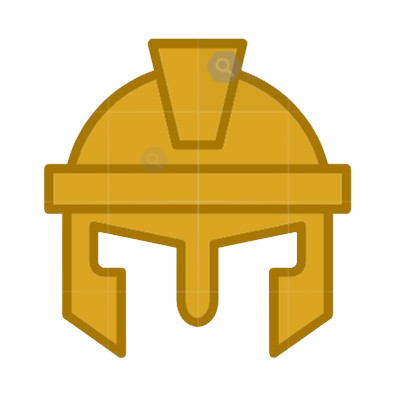

ROME
Ancient Wonders
Ancient ROME
A powerful civilization that grew on the Italian Peninsula and became one of the greatest empires in history. It began as a small city and expanded into a vast empire that controlled large parts of Europe, North Africa, and the Middle East.
- Traditionally in 753 BC
- Famous Leaders: Julius Caesar, Augustus

Government: Kingdom, Republic, Empire- Language: Latin
- Army: Roman Legions
- Landmarks: Colosseum, Pantheon, Forum
- Architecture: Arches, domes, baths
- Culture: Theater, gladiator games
Iconic Monuments of Rome
The Colosseum
The largest ancient amphitheater ever built, capable of holding 50,000 spectators. Site of gladiator contests and spectacles.
Details →Pantheon
Best-preserved ancient Roman temple, famous for its massive unreinforced concrete dome and oculus.
Details →Roman Forum
Heart of ancient Rome: political, commercial, and religious center surrounded by ruins of important government buildings.
Details →Trevi Fountain
Stunning Baroque fountain where tradition says tossing a coin ensures your return to Rome.
Details →Castel Sant’Angelo
One of Rome’s most versatile monuments, standing as a witness to nearly 2,000 years of the city's turbulent history.
Details →St. Peter’s Basilica
one of the holiest and most impressive churches in the world, its soaring dome and intricate interior make it one of the most famous landmarks in Rome.
Details →Piazza Navona
the quintessential Roman square—a vibrant open-air masterpiece that perfectly captures the city's Baroque soul. Built on the site of the ancient Stadium of Domitian.
Details →The Spanish Steps
One of Europe’s most iconic urban landscapes. This grand 135-step staircase was built between 1723 and 1725 to bridge the gap between the Spanish Embassy's square at the base and the French church, Trinità dei Monti, perched at the top.
Details →The Vatican Museums & Sistine Chapel
One of the most significant art collections in the world, spanning over nine miles of galleries within the Vatican City. The journey culminates in the Sistine Chapel, a site of immense religious importance and the location of the Papal conclave.
Details →Altare della Patria (Victor Emmanuel II Monument)
One of Rome’s most imposing and recognizable landmarks, this colossal white marble monument was built to honor Victor Emmanuel II, the first king of a unified Italy, and the spirit of the Risorgimento.
Details →
Book A Visit
Open Daily
8:00 AM — 7:00 PM
Last entry 6:00 PM Ticket Price
Ticket Price
350 EGP
Children & seniors discount